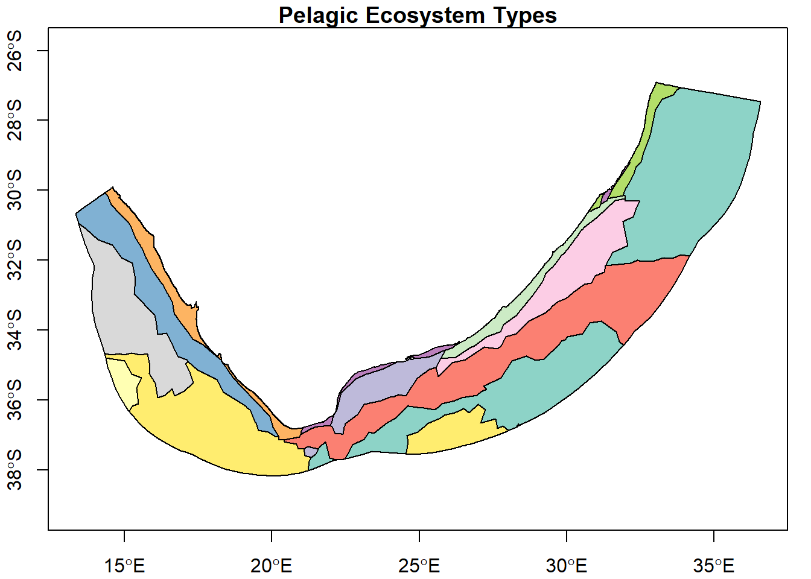
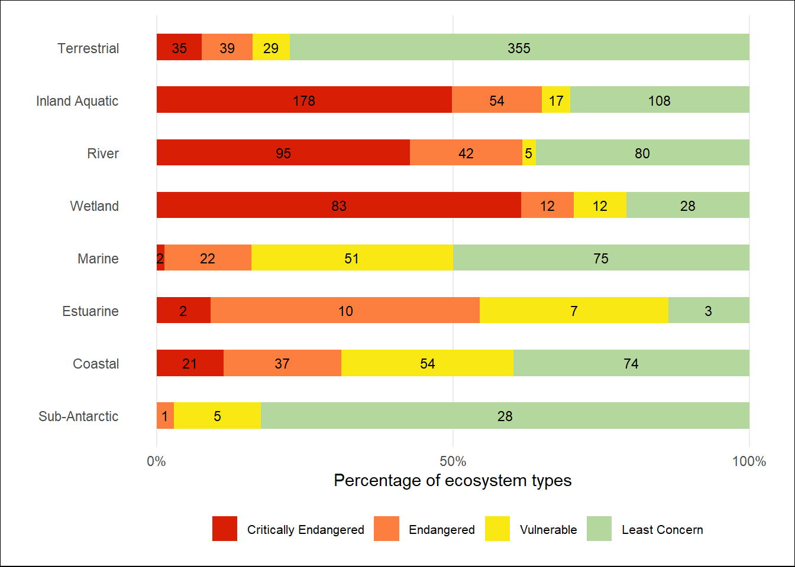

Your greatest collaborator ever is likely to be your future self. Do yourself (and all other collaborators) a great service by keeping an organised and well documented project that they can navigate and understand with relative ease. A frequent impediment to effective and easy collaboration is understanding your collaborator’s work: finding the pertinent information, the sequence of steps followed and understanding the logic of decisions taken.
1.1 General suggestions for good data hygiene (See Borer et al. 2009)
Use descriptive, standardised names for your files and folder names. Avoid spaces, use underscores or dashes instead. Capitals are useful in your writing, but they can be an unnecessary painpoint and potential inconsistency in file and variable names.
Use plain ASCII text for your file names, variable names, and data values. Avoid spaces, brackets or other special characters that will cause you pain in programming tasks!
Have your data in long table format (add data in rows, not columns).
Each column should contain only one type (class) of information (either text, numeric, etc.).
Good documentation: add comments or instructions throughout your project that help understand decisions made and the sequence of steps or scripts. Maintain a clear README (landing page) for each project: what is its purpose, what does it do, where are things?
Use a scripted program for analysis.
Store data in non-proprietary software formats and consider hardware formats & longevity (save data from those floppy disks!).
Always store an unchanged, original input data file. Saving intermediate step results to a file is frequently not necessary, unless they take a long time to compute.
Slow down and consider your steps & structure & documentation; it will likely save you time and improve your efficiency in the long run.
1.2 Project (folder) structure
There are different ways of structuring your project directories to keep them organised. In our team we try to keep a fairly standard structure as below (recognising that some projects will have unique requirements):
project (root) folder
The “home” of your stand-alone project. It should typically contain everything the project needs and all the resultant outputs, organised in meaningful subfolders. It also contains your README.md, .Rproj and .gitignore files (which are created automatically).
data folder
All your input data (often included via a link); these files generally do not get altered or over-written by your project scripts. You can modify your input data with your scripts, but do not overwrite the original input file (save an intermediate output file if necessary).
scripts folder
All your scripts that contribute to your workflow (the documented ‘recipes’ of your work)
outputs folder
Any and all results saved by the scripts (besides the images that we prefer to put in plots); these could be further divided into types of outputs if you would like.
plots folder
Any outputs that consist of image files (plots/figures) that you may want to include in reports or help visualise your results.
Therefore, anything written (saved) by the scripts is written to “outputs/…” or to “plots/…”. We generally avoid writing to the data directory as we want to strictly avoid changing input files. We also tend to avoid writing into the root directory as that might get crowded and chaotic if we generate a lot of files. See our project_template if interested.
1.3 How do we avoid many duplicated input files across different projects?
One solution is the use of symbolic links (or directory junctions), which you create inside your project data directory and which point to a target folder that is stored elsewhere on your computer and contains the input data.
In the Windows Command Prompt (cmd), use the mklink function in the following way:
to create a linked folder (first set of inverted commas) that points to your target folder (second set of inverted commas). Hint: copy the absolute paths from your Windows Explorer.
If you require admin rights to do so and lack them, you can try using the /j argument instead of /d, to create a junction, which ironically, seems potentially more risky (at least in our context). See some background about links and a very brief link testing project for further info.
Warning: In Windows, do not copy linked folders from one location to another (e.g. to replicate them from one R project to another), as they seem to paste the target contents and not a linked folder. *Please shout if anyone knows how to get around this problem.
If you repeat the above approach of linked folders across all your R projects, they can all point to a single directory that houses your input data somewhere else on your computer. There is no need to replicate your input data many times over in different projects.
NB Warning: Ensure that you add the symbolic link, e.g. data/link2gis in the above example, or your entire data/ folder, to the .gitignore file! Otherwise, Git will try to stage and commit your entire linked data junction, which might not be intended and may often be huge.
With the above solution, and to enable seamless interoperability across different machines, we need our code to find the correct input files irrespective of different subdirectory paths, because the (single) copy of data may likely be stored in different places on different machines.
This is achieved with the use of the R function list.files() to search for your input file. If you are collaborating on a project, this workflow becomes very valuable. Lets demonstrate:
### example## load the spatial features and dplyr packages (install them if you have not yet done so)if (!require("sf")) install.packages("sf"); library(sf)if (!require("dplyr")) install.packages("dplyr"); library(dplyr)## find and assign the file path to an objectmem_fl <-list.files(path ="../data", pattern ="^Marine_Ecosystem_Map_2023_final_pelagic_only.gpkg$", recursive =TRUE, full.names =TRUE) # Note: we include '../' to go up one directory level to the root folder, because I created a 'quarto' folder and unlike other (normal .R) scripts, quarto files get rendered from the folder they are saved in (in other words, their default 'working directory' is where they are saved). If we run it in the R console, we need to remove the '../' as the default working directory is the project root directory. this difference between the 'working directory' of quarto files and the R console or R scripts, can be avoided with a more robust approach, using the here() function:# mem_fl <- list.files(path = here::here("data"), pattern = "^Marine_Ecosystem_Map_2023_final_pelagic_only.gpkg$", recursive = TRUE, full.names = TRUE)## load the spatial file mem <-read_sf(dsn = mem_fl)## plot the pelagic ecosystem types# plot(st_geometry(mem), axes=T)mem %>%st_transform(crs =4326) %>%select(P_EcosysType) %>%plot(axes = T, key.pos =NULL, main ="Pelagic Ecosystem Types")

The file will be found as long as it exists somewhere within the path specified. Obviously, for consistent results and reproducibility, collaborators need to ensure they have precisely the same input data! The next section suggests a trick to accomplish that.
2 A centralised data repository (with SANBI IT systems)
Reproducible science requires us to apply exactly the same methods to exactly the same datasets. Sharing scripted workflows goes a long way to make methods reproducible, but another critical aspect is ensuring that the input data are identical. If we all have our own copy of input datasets on our machines, how do we ensure that they always remain the same, including when the data manager/owner updates them with new data or corrections? Below is a suggested approach that we are starting to implement. If anyone foresees problems with it, or if you have other solutions, please share!
Within the SANBI Marine Programme Team (Microsoft Teams), we have a ‘marine_data’ channel, where we curate all of our spatial layers and datasets. Because it includes datasets that have sharing and usage restrictions, it is a private (protected) channel and membership is restricted to those who need it. Although not critical to this demonstration, the data are grouped in thematic subfolders and a data inventory (spreadsheet) in the root folder captures the metadata and the location (folder path) of the datasets. This Teams channel is our ‘centralised and authoritative data’ storage. The advantage of using a Teams channel rather than a staff member’s OneDrive account, is that the channel should be safe and persist irrespective of staff turnover. If datasets are updated, they need to be updated here and tracked in the data inventory.
Up until a few days ago, we manually downloaded a copy of the data to our computers. We had to remember to re-download the relevant folder or dataset if changes were made to them. However, Natasha recently noticed that we can add a shortcut to the Teams channel in our OneDrive account, and the OneDrive account is synced to our computers.
Lets try this:
Navigate to your MS Teams and to the nba_data channel within the NBA_data team.
Click on ‘Add shortcut to OneDrive’ in the options near the top (center) of the screen.
If it is not already, set up your computer to sync your OneDrive account (or certain parts of it), including the newly added nba_data folder.
If you manage that, you have a synced version of the Teams data folder on your computers and multiple people can access the same dataset. Any updates or changes made to that dataset on Teams will sync through to everyone’s OneDrive and their computer (when they next access that file).
Lets try the same exercise as above in Section 1.3, but this time create a symbolic link from your project data drive to the nba_data folder we just added to OneDrive. For me, this was typing the following into Windows Command Prompt:
So, now we can all access the same nba_data datasets with our R projects.
But, beware:
Never write to your data (input) folder! This rule becomes absolutely critical if we are all sharing access to a central authoritative data repository. These data are not your personal copy! Do not make changes to them unless you are the authority/owner/data manager or have explicit permission or instruction to do so. (Having read-only access would be ideal if we can configure that)
Unless it is appropriate to share your input data with the online repository (and the data folder does not exceed your online repo size limits), you may likely want to add the linked folder (‘link2nba_data’ in the above example) to your .gitignore file. I already did this for this tutorial, because I wanted you to add those data as a linked folder via your OneDrive account and not receive them when you cloned the online repo.
Lets load some of the data and play with them:
## load the spatial features and dplyr packages (install them if you have not yet done so)library(sf)library(dplyr)if (!require("nbaR")) devtools::install_github("SANBI-NBA/nbaR"); library(nbaR)## create file paths (find the correct path, which can vary among different machines)mem_fl <-list.files(path = here::here("data"), pattern ="^Marine_Ecosystem_Map_2023_final_pelagic_only.gpkg$", recursive =TRUE, full.names =TRUE)threat_fl <-list.files(path = here::here("data"), pattern ="^nba_example_thr_data.csv$", recursive =TRUE, full.names =TRUE)bar_plot <-nba_plot(NBA_example_thr_data,`OVERALL types`,2:5,CHRT ="bar",NUM =TRUE,LAB ="Percentage of ecosystem types",SAVE =NULL)bar_plot

3 References
Borer ET, Seabloom EW, Jones MB, Schildhauer M (2009) Some Simple Guidelines for Effective Data Management. The Bulletin of the Ecological Society of America 90:205–214. doi: 10.1890/0012-9623-90.2.205